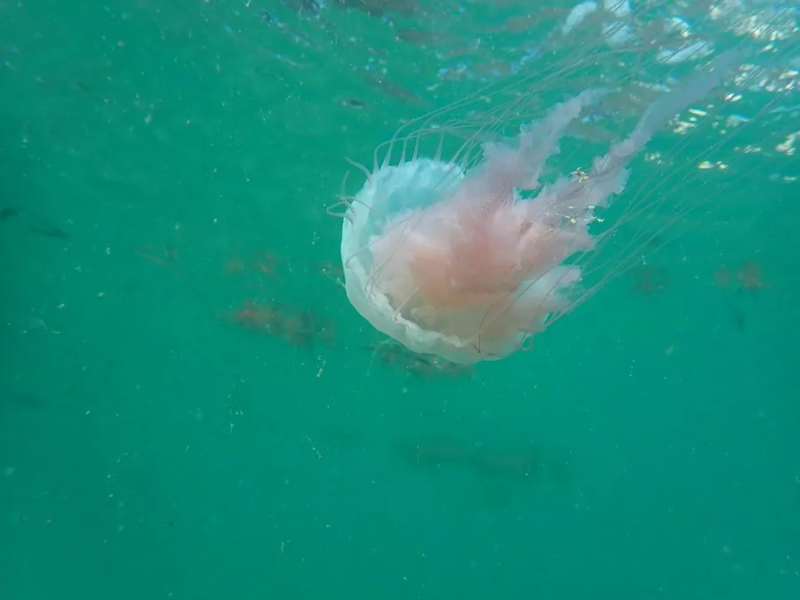

其他无脊椎动物 · 动物界
海刺水母 Chrysaora quinquecirrha

西大西洋和加勒比海的旗口水母，伞径可达 25 厘米，触手细长，刺伤疼痛，夏季常成群出现在近岸水域。
- 分类
- 门刺胞动物门纲钵水母纲目旗口水母目科游水母科属黄金水母属
- 栖息环境
- 西大西洋近岸的河口、海湾、红树林和浅海水域
- 地理分布
- 美国东海岸、墨西哥湾和加勒比海
- 保护级别
- IUCN 暂无评估；非中国原产
物种志
海刺水母的伞体呈半球形或碟形，直径 10–25 厘米，伞面乳白色、淡蓝色或带褐色条纹，伞缘伸出许多细长触手，最长可达 1 米以上，口腕呈皱褶状。伞体表面有放射状褐色条纹，看起来像一张网。
它分布于西大西洋、加勒比海和墨西哥湾的近岸水域，常见于河口、海湾和红树林，夏季水温升高时大量繁殖。它以浮游动物、鱼卵和幼鱼为食，触手上的刺细胞能麻痹猎物。海刺水母的刺伤会引起剧烈疼痛、红肿和瘙痒，少数人会出现过敏反应；被刺后用海水冲洗，可用热水浸泡缓解，不要用淡水冲洗，严重时需就医。它的生活史包括水螅体和水母体两个阶段，水螅体附着在硬底上越冬。
形态与习性
- 伞径约 10–25 cm
- 触手细长，最长可达 1 m 以上
- 食性浮游动物、鱼卵和幼鱼
- 刺伤风险刺伤剧痛红肿，用海水冲洗并热水浸泡，严重时就医
- 生活史水螅体附着越冬，水母体在夏季大量出现
- 栖息河口、海湾、红树林和浅海
趣味知识
- 海刺水母的伞面有褐色网纹，触手可以拖到一米多长。
- 夏季近岸海水变暖时，它们会成群出现，游泳者要留意。
- 被海刺水母刺伤后不要用淡水冲洗，海水和热水更合适。